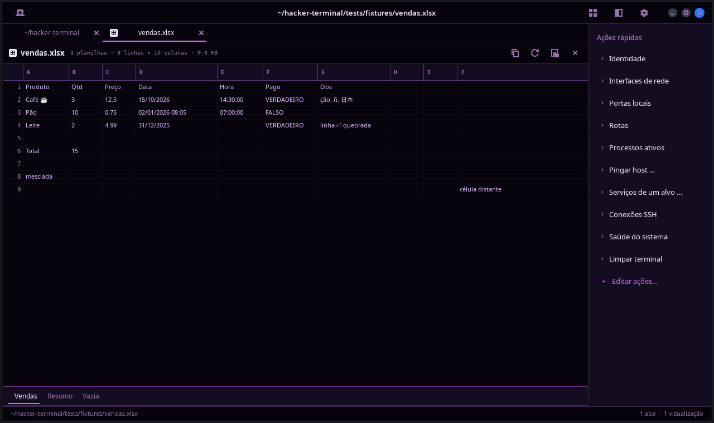
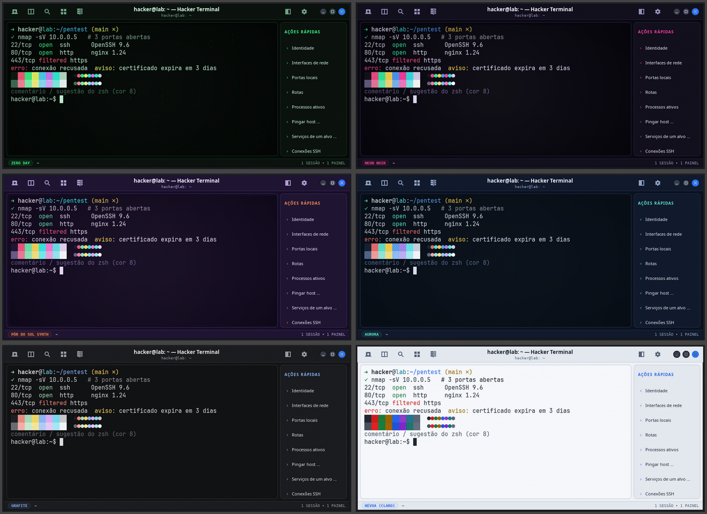

Para sistemas Linux, com 22 temas, integração com o shell, terminal suspenso no F12, conexões SSH e o som de um teclado mecânico. Grátis e de código aberto.
O que você usa a cada comando, sem precisar configurar nada.
Ele sabe quando um comando falhou
Cada comando ganha uma marca na margem, vermelha quando dá errado, e o código de saída aparece na barra. Ctrl+Shift+↑ pula entre comandos e Ctrl+Shift+L copia só a saída do último.
hacker@lab:~$ ls
evidencias notas.md scan.sh
hacker@lab:~$ grep -r senha /etc/nao-existe
grep: /etc/nao-existe: Arquivo ou diretório inexistente
Zero Day · ~SAÍDA 2
Histórico de todas as abas
Ctrl+Shift+H busca qualquer comando que você rodou, até de ontem, com resultado, duração e pasta. Só falhas, se quiser.
Desce no F12
O terminal suspenso aparece no topo da tela com uma tecla e some com a mesma tecla, com as abas intactas.
SSH sem decorar nada
Conexões salvas, chave instalada com um clique ou senha no chaveiro do sistema. Produção abre num tema vermelho.
Até 4 painéis por aba
Divida a tela, dê nome a cada painel e digite em todos ao mesmo tempo com Ctrl+Shift+I.
Som de teclado mecânico
Cada tecla toca o clique de um switch, sem atraso. Escolha o seu e ouça:
Imagens e planilhas sem sair dele
ht-open foto.png abre numa aba ao lado; ht-open --inline desenha a imagem na própria saída. CSV, XLSX e ODS também.

22 temas, todos fáceis de ler.
Do minimalista ao fósforo de tubo CRT. Cada tema passa no teste de contraste WCAG, e você ainda pode pôr uma imagem de fundo atrás do texto.

Alguns favoritos
Zero Day
Fósforo Âmbar
Neon Noir
Aurora
Grafite
Papel (claro)
Alerta VermelhoAlto ContrasteAmber CRTAuroraCyberpunk PurpleDOS VGAFósforo FuturistaFósforo VerdeFósforo Verde ScanlinesFósforo VintageFósforo ÂmbarGrafiteIce BlueMainframe 3270Matrix GreenMicro 1977Minimal DarkNeon NoirNévoa (claro)Papel (claro)Pôr do Sol SynthZero Day
Tudo a um atalho de distância.
Todos podem ser trocados em Preferências.
Nova abaCtrl+Shift+T
Histórico de comandosCtrl+Shift+H
Dividir lado a ladoCtrl+Shift+D
Copiar saída do último comandoCtrl+Shift+L
Conexões SSHCtrl+Shift+S
Paleta de comandosCtrl+Shift+P
Digitar em todos os painéisCtrl+Shift+I
Terminal suspensoF12
Instale em um minuto.
Para sistemas Linux.
Baixe o arquivo hacker-terminal_0.19.0_all.deb na página de versões.
Instale com o apt, que resolve as dependências sozinho:
sudo apt install ./hacker-terminal_0.19.0_all.deb
Prefere sem pacote? Clone o repositório e rode ./install.sh, que instala só para a sua conta.
Perguntas frequentes
É grátis?
Sim. O Hacker Terminal é de código aberto, sob a licença MIT. O código está no GitHub.
Funciona com o meu shell?
Sim, ele abre o seu shell de sempre. A integração (marcas de comando, histórico, saltos) funciona com zsh e bash e é ligada sozinha; o resto vale para qualquer shell.
Ele guarda minhas senhas SSH?
Só se você pedir, e no chaveiro do sistema, nunca nos arquivos do terminal. O mais seguro é o botão de acesso por chave, que dispensa senha.
Onde ficam as minhas configurações?
Em ~/.config/hacker-terminal/: preferências, temas, perfis, ações e conexões. O histórico de comandos fica em ~/.local/state/hacker-terminal/, só no seu computador.
Como atualizo?
Baixe o novo .deb e instale com o mesmo comando do apt. Suas configurações continuam onde estão.